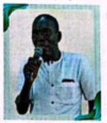
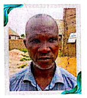
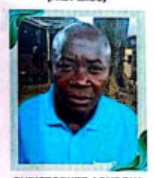
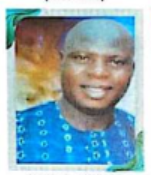

The Church (BIRCCAN LCC WAILAMAYO) was formally known as (EKAN), which was formed far back in the Year 1970 as a Fellowship Centre. Though, date and time was not ascertained from the inception. Leaders as at then are Mallam .A. Dauda, Mr. Elishama and Mr. Angabi who were the first to serve respectively in the Fellowship Centre back then. They usually come from (BIRCCAN CENTRAL).
Fellowship back then takes place in an open Military Parade Ground of the then Military Base in 1973. Mallam Dauda Auta with his assisting colleagues sacrificially and successfully raised money and secured materials and fenced the present site today of BIRCCAN (EKAN) WAILAMAYO, with local materials known as (ZANA) in Hausa Language.
Members back then were by name Mr. Emmanuel Ameshi, Mr. Mika Yarima. They were also the officiating bodies of the Fellowship Centre in the then 1973, with the Grace of God upon the lives of those two and sacrifice inclusive. They embarked on visitation and evangelism which the Church began to grow in numbers (CONGREGATION).

Fellowships continued till the Centre metamorphoses to become a preaching Centre with about (60 Members) in 1977. Between this times of 1977 - 1990 a lot of things came to stay in BIRCCAN (EKAN) LCC WAILAMAYO, Evangelist Siman .A. Auta was the Pastor and Chairman of the LCC under his Stewardship with the Council of Elders of the LCC.
They wrote letter to the apex body of the Church Head Quarters BIRCCAN (EKAN) CENTRAL. Though the DCC (EKAN CLASSES) on the 6th of October, 1991, demanding for a consistory LCC, at the apex level back then their letter was given attention, on that note delegate meeting was held in November, 1991 which their request was granted to the LCC.
On the 29th of February, 1992, the new consistory LCC was established as BIRCCAN (EKAN) WAILAMAYO, AGYOGO, alongside with the ordination of Late Siman Apela Auta as Reverend and the resident Pastor. Fellowship and other Church activities inclusive thereafter and the number of the Church Members grew speedily alongside, the numbers of Youths in the Church were drastically inclining in every single Church Service to a point that, the Youths of the Church now saw that their number are increasing and just like other denomination who have their own Youth Section or Service, that it will be of good that LCC WAILAMAYO should have Her own Youth/English Section where Message Communication in the Service will be in English Language.
Back then in the Mother Church is strictly in Hausa Language and this became a challenge on the side of the Youth and it paved way for the Youth to hold a meeting among themselves in the Church Circuit, that they should move motion or write to the Elders Council of the Church demanding that Youth or English Section should be created since it is not every Youth of the Church that understands Hausa Language very well and their quest was given attention, though reasons for their quest was pointed out in the Elders meeting and it was granted to the Youths of the Church on the 10th of June, 1995.
On the same date, the English Section was inaugurated, the frontiers of the idea of creating a Section known as the English Section in our Church today are as follows:
And so many more that are too numerous to mention their names. The Leadership System of the Church in general is based on Tenureship which will last for just Two (2) Years, be it the position of an Elder, Deacon, Chairman, exception of the position of the resident Pastor/Reverend.
With the help of the Leadership position, the Section was able to function very well like messages was preached in English Language. Though, the Section is strictly guided with the Doctrine of the Church which is applicable to the method of Her Services in Her everyday worship. The number of the congregation according to the research made is that the Section had up to 20 - 25 persons in a Single Service day. 1997 - 1999, the reign of Late Elder Matthew Andy Adesela ended and Elder Nuhu Megandi who was appointed by the Council of Elders of the Church to the English Section to Chairman and oversee every activity of the English Section. The Cabinet Member of the Leadership during this time are as follows:
During this time, the Section continues to hold Her Service based on the existing protocol. Song presentation and messages was in the English Language and Hausa as well and the Youths were encouraged. Immensely, the number of the congregation sky rocketed. Coming down to the following Year a new Chapter begins under Leadership of Elder Peter Pele Age in the Year 1999 - 2001. Elder Samuel Shinto as Secretary.
With others who were also part of the Leadership back then. Bible Study and Prayer meeting was brought on board during this era of Elder Peter Pele Agye as the Chairman/Overseer of the Section, some persons were given the room to come teach in Bible Studies and Prayer meeting because of their Biblical Knowledge and Spiritual commitment in the things of God.
One among many that can be mentioned is familiar person whom is well known in the community and the Church at large is Mr. Williams .A. Akwuchi (Late). Though he is not a member of the Church BIRCCAN LCC (EKAN) WAILAMAYO, but he always makes out time to join the Church in activities as such even Sunday Service before his death. The Section was faced with so many challenges but God never failed them (Leaders). They came up with idea of organizing an Internal Launching and Appeal Forms to raise money in order to buy some Musical and Electronic Gadgets for the Section of which it was achieved by the Section back then.

In 2001 - 2003, Elder Timothy Amodu took over from Elder Peter Pele Agye based on appointment from the Council of Elders, from the Mother Church as the Chairman and overseer of the Section. Though, during questioning of the past Leaders, we were not told or able to lay our hands on materials carrying the names of the Elders during this era. But it was told that Church activities went well and they maintained the protocol that existed, every member of the English Section back then enjoyed his reign as the Chairman of the Section.

In 2003 - 2005, Elder Joseph Ochai JP succeeded Elder Timothy Amodu as the Chairman of the Section. Elder Danjuma Awokwu was the Secretary. The Section back then during the reign of the above name as the Chair person. Though, other Cabinet Members back then was not ascertained during research and questioning on how his Leadership as the Chairman of the Section went, but we were told that everything about the Section during this time was Okay and the Members of the Section were inspired by the examples he laid in the Section.

Shortly after the reign of Elder Joseph Ochai JP, as the Chair-person of the Section, Elder Danjuma Awokwu who was his Secretary took over from him as the Chairman/Overseer of the English Section far back in the Year 2005-2007.
Elder Danjuma Awokwu came on board in the above Year and his Secretary back then was Elder Samuel Bulus and still to say, other members of the Cabinet were not pointed out to us, we the Research Team in other for us to document their names for Future purposes. English Service Section continued and the Section did a lot of exploits and via Her Worship Service days and Bible Study. The Leaders of the Section, that time did a replicable work and laid down legacies that the Future Generations should emulate in the Service of the Church and working for God in HIS vineyard as believers.

In the Year 2007 - 2013, Elder Christopher .B. Aondokaa who succeeded Elder Danjuma Awokwu as the Chairman of the Section was elected through an open balloting in one of the Worship Services of the Section. The Section by-cut Her previous methods of bringing Chairman to the Section which was based on appointment from the Church Council of Elders.
The Section was brought to Her lime light in the area of choosing Her Chairman and it has helped Her Services, during this time, the Secretary of the Section was Mr. Adams Yola, he co-joined with other Members of the Cabinet together, they sacrificially work for the Section by bringing and providing materials such as Hymm Books and other materials etc. Evangelism and encouragement of Youths within the Local Community was embraced by the Chairman and his Cabinet Members alongside other Members of the Section.

In the Year 2014 - 2018, Elder Dogara Sendere came on board as the successor of Elder Christopher Aondokaa who was the former Chairman of the English Service Section.
Elder Dogara Sendere, was made the Chairman of the Section in the above Year. Though, he happened to stay in the office as the Chair person for more than (2 Years) due to lack of Man-Power and Competent hands and minds in the English Section, during this time of his reign. He brought a lot of change to the Section, with his Cabinet Members back then. The Secretary of the Section during this time (1" Tenure) was Elder Abraham Adanji, who was very outstanding in his Secretarial duties for the Section (English Service).
Every ministry here exists for one reason: to help people take the next step, whatever that looks like for them.
Musicians, vocalists, and creatives shaping the sound and visual life of our services.
Learn moreA safe, energetic space for middle and high schoolers to grow in faith and friendship.
Learn moreLocal food pantries to global partnerships — practical love in our city and beyond.
Learn moreAge-appropriate, story-driven programming that makes Sunday the best day of the week.
Learn moreTwenties & thirties figuring out life, faith, and everything in between — together.
Learn moreA quiet, steady team praying with and for our church family every single week.
Learn moreCome early for coffee, stay late for conversation. Here's when we gather each week.
Two identical services, main sanctuary
Runs alongside both services
Church Auditorium, all ages welcome
Section of intercession
Part 3 of "Slow Down" — why rest was written into creation before the first tired person ever showed up.
Food, games, and live music on the front lawn for the whole church family.
A one-day intensive for couples at any stage — from newlywed to decades in.
Commissioning service and send-off for our youth heading to summer camp.
Partnering with our neighbors to stock the local pantry ahead of the school year.
Join us as we celebrate a new group of believers taking their next step.
Every gift — big or small — goes straight toward our ministries, our neighbors, and the people this church exists to serve.
Give NowQuestions about a visit, a ministry, or just want to talk? Reach out — a real person will write back.